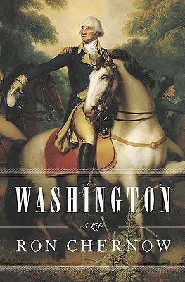

Washington: A Life
- Read on 2017-01-01
- Rating: ️️️️️
- Format: 🎧 (41 hours 54 minutes)
Before I read this book, I liked George Washington because I'm American. After this reading this book, I _really_ like George Washington, because he was a kind, generous, focused, determined, and caring man, who ceaselessly gave of himself to a country that likely doesn't fully appreciate his sacrifices, or how difficult things were. What a stud... albeit childless (what a shame). The Father of our Country was paternal in all the good ways, both with establishing rules and norms, but with assisting others. He was a remarkable person, and this was an extremely enlightening presentation of his life.
As for the author, Ron Chernow, I feel he did a pretty good job, but harped on Washington's inaction with slavery too much. Don't get me wrong - I agree that more could/should have been done, especially at the inception of the country. It would have nipped that issue in the bud, metaphorically speaking. That said, it's easy for us to play armchair abolitionists from our 21st century perspective. Chernow laid into Washington repeatedly over the issue, to the point that I'm somewhat surprised he didn't title the book "Washington: A Life (But don't forget the slavery thing)".
- Prior: The Adventures of Tom Sawyer
- Next: The Emerald Mile